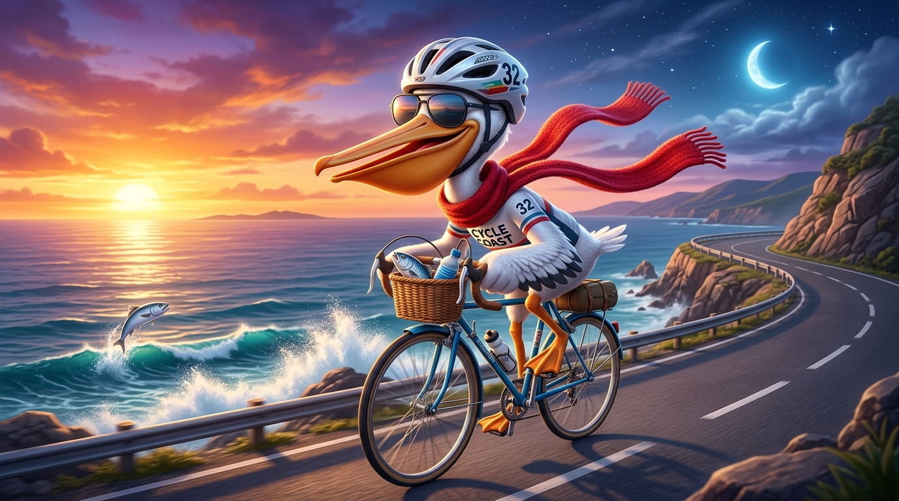

🕶️ 鹈鹕第一人称墨镜视角 · 前方长喙张合抓鱼
🏆
成就解锁
在海岸公路上抓到第 1 条海鱼

鹈鹕海岸骑行 3D
Verlet 布料围巾
🤖 自动巡航追鱼中 · 按 W/A/S/D/空格/T 随时接管
切换巡航
🐟 渔获 / 连击
0
×1
🏅 得分 / 里程
0
0 m
🧣 红围巾飘扬度
78%
布料物理
昼夜循环
🌅 黄昏落日 (Dusk)
循环
黄昏
暮色
星空月夜
🏆 成就
0 / 14
🎵 音乐 96 BPM
🔊 音效开
画质模式
画质：按帧率自适应
画质：极致 (Ultra)
画质：高画质 (High)
画质：均衡 (Medium)
画质：流畅 (Low)
60 FPS · 自适应 (高画质)
COASTAL PELICAN TROPHIES
🏆 海岸骑行 14 项全成就图鉴
W/S 加减速 · A/D 变道抓鱼 · 空格跳跃抓高空飞鱼 · T 展翅抬前轮 · 1-5/C 切换五种镜头
✕ 关闭